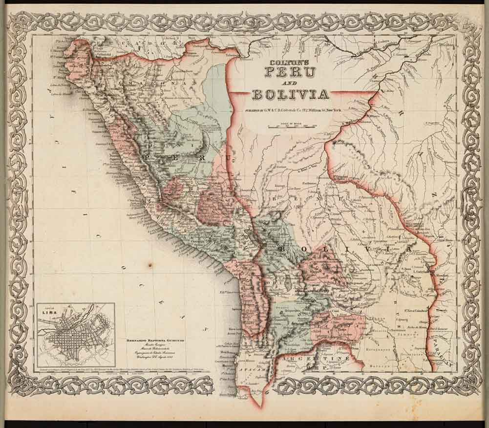

Conoce las historias que marcaron a los 9 departamentos de Bolivia

Historia: La Paz, fundada en 1548 por el conquistador Alonso de Mendoza, es conocida por su impresionante geografía. En sus inicios, la ciudad fue un importante centro minero y comercial. Fue sede del gobierno durante la época republicana y jugó un papel clave en las luchas por la independencia de Bolivia. La Paz es la sede del gobierno del país, y su historia está marcada por diversos movimientos sociales y políticos.
Historia: Santa Cruz, fundada en 1561 por Ñuflo de Chávez, tiene una historia de expansión y desarrollo económico que la ha convertido en el motor económico de Bolivia. Su crecimiento fue impulsado por la agricultura, especialmente la producción de azúcar y soja. A lo largo de los años, Santa Cruz se ha caracterizado por su diversidad cultural, siendo una región clave para el desarrollo de Bolivia en la era moderna.
Historia: Cochabamba, conocida como "La Ciudad Jardín", fue fundada en 1571 por el capitán Francisco de Salazar. Durante la colonia, se destacó por su papel como centro de la agricultura y la ganadería. La ciudad fue testigo de importantes movimientos durante la lucha por la independencia y es famosa por su participación en las guerras civiles del siglo XIX.
Historia: Potosí fue fundada en 1545 y es conocida por su Cerro Rico, una de las minas más grandes y productivas de la época colonial. Su riqueza en plata ayudó a financiar el Imperio Español, convirtiéndola en una de las ciudades más importantes del mundo durante el siglo XVI. La historia de Potosí está marcada por su enorme riqueza minera y su influencia en la historia de América Latina.
Historia: Tarija, fundada en 1574 por Luis de Fuentes y Vargas, tiene una historia marcada por su producción de vino y su influencia en la economía del sur de Bolivia. Durante la independencia, Tarija fue escenario de importantes batallas. A lo largo de los siglos, se ha consolidado como un lugar con una identidad cultural única, que combina influencias bolivianas y argentinas debido a su cercanía con Argentina.
Historia: Chuquisaca, cuyo capital es Sucre, fue la sede del gobierno y la capital constitucional de Bolivia hasta 1898. La ciudad fue el epicentro de las luchas por la independencia y la firma de la primera constitución del país en 1825. Sucre es conocida como "La Ciudad Blanca" por su arquitectura colonial y su valor histórico en la construcción de Bolivia como nación.